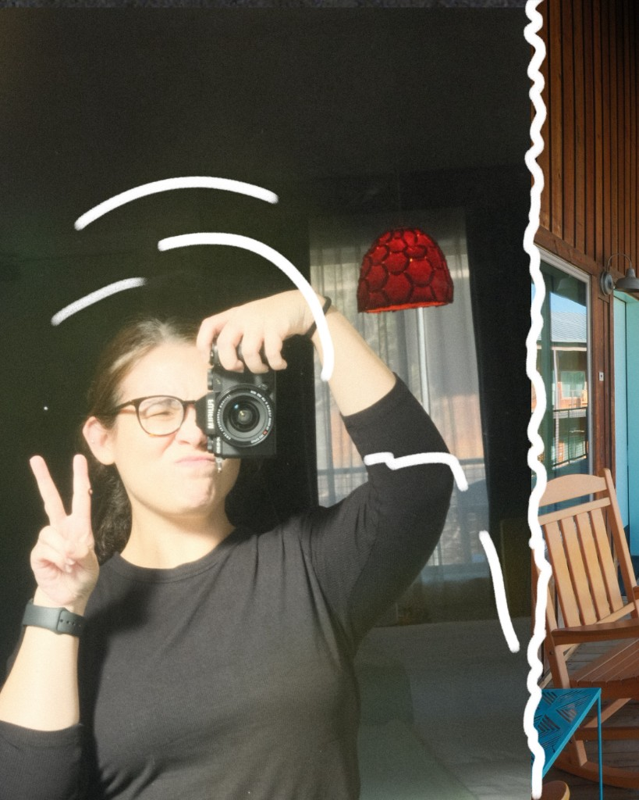

Languages
HTML, CSS, JavaScript
PORTFOLIO
Frontend developer creating thoughtful, intentional digital experiences.
View My WorkABOUT ME

I’m an aspiring frontend developer based in Mission, Texas, with a strong love for both technology and thoughtful design. I’m currently pursuing a Bachelor’s degree in Computing Applications at Texas Tech University, where I continue to grow my skills in development and digital problem-solving.
Outside of tech, I’m a mom, a student, and a working professional—roles that have shaped the way I approach my work with discipline, empathy, and adaptability.
I enjoy digital art, photography, baking, and travel, and I bring that same creativity into the experiences I design and build.
SKILLS
This section highlights the tools, technologies, and strengths I bring to my work, from languages and frameworks to the habits that help me learn and collaborate.
HTML, CSS, JavaScript
GitHub, VS Code, Cursor, Figma
Responsive design, visual hierarchy, clean UI, detail-oriented work
WORK
This section showcases work I have built or contributed to, with a focus on thoughtful design and user-friendly experiences.
A project focused on a fuel pay experience and frontend structure.
A parent resource guide created in Notion to organize and share helpful information in a clear and accessible way.
A collection of HTML-based projects published through GitHub, showing my progress in frontend structure, layout, and styling.
CONTACT
I’m always excited to keep learning, growing, and creating thoughtful digital work.
Email: your-email@example.com
GitHub: github.com/yourusername
LinkedIn: linkedin.com/in/yourusername